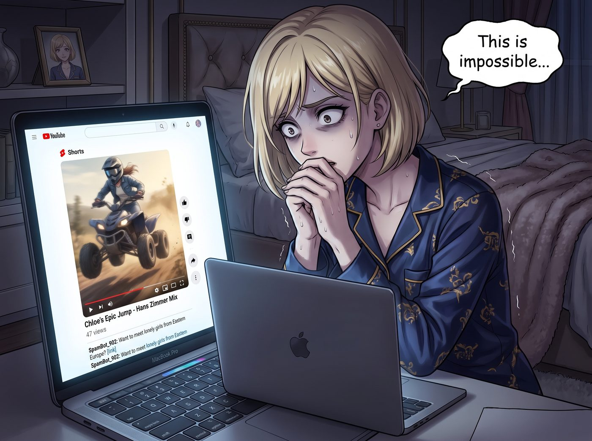
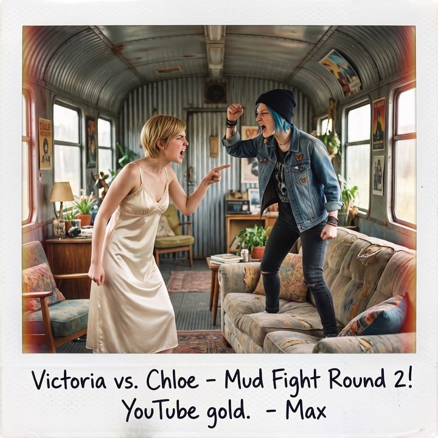

泥巴土撥鼠


二十四小時後。
二號車廂的會客區裡，氣壓低得彷彿又要迎來一場西雅圖風暴。
Victoria 穿著真絲睡衣，死死盯著面前的 MacBook Pro 螢幕，雙手因為極度的不可置信而微微顫抖。
螢幕上是她昨天精心剪輯、調色、甚至配上了史詩級漢斯·季默（Hans Zimmer）風格 BGM 的 4K 極限越野 Shorts 短影音。畫面上，Chloe 騰空而起的姿態堪稱完美。
而影片下方的播放量顯示：47 次。
其中 5 次是 Victoria 自己刷的，2 次是機器人留下的「想認識來自東歐的寂寞女孩嗎」詐騙連結。
「這不可能……」Victoria 喃喃自語，名媛的自尊心碎了一地，「這可是好萊塢級別的運鏡！那個白痴藍毛猴子飛得那麼高！為什麼沒有人看？！網路上那些紅牛（Red Bull）的極限影片隨便都有幾百萬播放！」
坐在多螢幕工作站前的 Lily 端起熱牛奶喝了一口，推了推圓框眼鏡，用一種近乎殘酷的冷靜語氣，戳破了當代網際網路的虛假繁榮。
「因為紅牛是全球頂級的快消品巨頭，Victoria 學姐。他們的點擊量、首頁推薦位和演算法權重，是用每年數億美元的行銷預算『買』出來的。」
Lily 敲擊了幾下鍵盤，調出一份密密麻麻的數據熱力圖： 「根據公開的創作者數據報告和平台研究，在沒有資本買量的前提下，傳統的『野生極限運動』影片，其自然流量的完播率極低。大眾對純粹的『技術與勇敢』已經審美疲勞了。」
Chloe 嘴裡叼著一片吐司，不爽地湊了過來：「那現在這群網路白痴到底喜歡看什麼？老娘可是冒著脖子骨折的風險飛了那個跳台！」
「根據演算法的邏輯，」Lily 平靜地給出了致命一擊，「當前自然流量最高的短影音，核心標籤是：沙雕、互罵、撩事鬥非、情緒失控、以及極致的低智商衝突。」
Lily 甚至調出了幾個破千萬播放的對標影片：一個是在沃爾瑪門口為了搶打折衛生紙而互扯頭髮的大媽；另一個是兩個精神小伙互相往對方褲襠裡塞鞭炮。
「簡而言之，智商越低，情緒越失控，越能觸發使用者的『多巴胺獎勵機制』與『優越感』，從而獲得極高的推薦權重。」Lily 總結道。
「太荒謬了！」Victoria 崩潰地合上電腦，「這簡直是對人類文明和藝術的褻瀆！我堂堂 Chase 家族的繼承人，絕不可能去迎合這種低智商的網路垃圾！」
「其實……」
一直沒說話的 Max 坐在沙發上，弱弱地舉起手，「Victoria，妳剛才看的是頻道裡的第一支影片。妳有看……Chloe 昨晚瞞著妳上傳的第二支影片嗎？」
Victoria 愣住了。她猛地重新打開電腦，刷新了 YouTube 工作室的後台。
頻道裡赫然出現了第二支 Shorts。
標題極其簡單粗暴且充滿了演算法誘惑力：《Rich Girl vs. Mud Trash Panda (Wait for the scream!)》（富家女 VS 泥濘垃圾熊：撐到最後聽尖叫！）
影片沒有任何濾鏡，沒有史詩音樂。
內容正是昨天跳台事件的「災難性結尾」：ATV 砸進泥坑，三公尺高的泥漿海嘯瞬間吞沒了拿著穩定器的 Victoria。
接下來的十五秒，是未經剪輯的純粹混亂。Victoria 滿臉爛泥，昂貴的風衣毀於一旦，她像個失去理智的瘋婆子一樣，在泥地裡跳腳，發出響徹雲霄的崩潰尖叫：「Chloe Elizabeth Price——！！我要殺了妳！！」而鏡頭外，傳來 Chloe 沒心沒肺、宛如反派般的狂笑聲。
Victoria 顫抖著將視線移向播放量。
2,450,000 次播放。
18 萬個讚。
4.5 萬條評論。
「哦。我的。上帝。」Victoria 覺得自己快要缺氧了。
她點開評論區，裡面的留言完美印證了 Lily 的「低智商衝突」理論：
- 「哈哈哈哈那個穿 Prada 的女的叫得像隻被踩了尾巴的土撥鼠！」
- 「雖然像演的，但看有錢人吃癟就是爽！給那個騎車的龐克女孩點讚！」
- 「這兩個人絕對有仇，明天會發互毆的影片嗎？已訂閱！」
「Chloe Price！！！」
Victoria 轉過頭，死死盯著那個罪魁禍首，眼神如果能殺人，那隻垃圾熊已經被千刀萬剮了，「妳居然把這種……這種損害我名譽的低俗垃圾發到網路上？！立刻給我刪掉！」
「嘿，那可是我的剪輯處女作。」Chloe 叼著吐司，笑得一臉無辜。
「在您刪掉之前，學姐，我建議您先看一眼頻道的信箱。」
Lily 面不改色地把螢幕轉向她，那雙圓框眼鏡後閃爍著絕對理性的資本光芒： 「平台本身的廣告分成有門檻，這個新頻道暫時還拿不到。但由於觀眾強烈期待您們後續的『互罵與復仇』，頻道的粉絲數在十二小時內突破了五萬。從今天早上開始，信箱裡已經收到了七封品牌合作邀約。其中一家防摔手機殼品牌，開出的第一支業配報價是五千美元。」
車廂裡陷入了死一般的寂靜。
Chloe 看了看螢幕上的三百多萬播放，又看了看 Victoria 那張一陣青一陣白的臉，終於忍不住爆發出昨天那種招牌式的反派狂笑：「哈哈哈哈！承認吧大小姐！妳那引以為傲的高雅品味一文不值！妳現在是全美知名的『泥巴土撥鼠』了！」
Victoria 氣得渾身發抖。她舉起手，似乎想砸了電腦，但目光掃過那串代表著 五千美元（足以支付好幾個月營地水電費）的報價時，她的動作僵住了。
老錢家族的血統裡，對於「利潤」的渴望最終戰勝了「優雅」。
「……下不為例。」
Victoria 咬牙切齒地從牙縫裡擠出幾個字，然後狠狠地指著 Chloe：「既然這群網路白痴喜歡看互罵，好！Chloe，明天妳給我把那台破 ATV 開到院子裡！我要拿著水管親自呲妳的臉！我們把這場『低智商真人秀』演到底！既然要丟臉，老娘要把西雅圖這半年的房租全賺回來！」
「來啊！怕妳啊！泥巴大戰第二回合！」Chloe 囂張地站上沙發，舉起拳頭。
Max 躲在角落裡，看著為了 YouTube 流量而徹底放棄治療、準備策劃下一場「沙雕互毆」的兩人，無奈地笑著搖了搖頭。
她舉起寶麗來相機，對著正在為了「到底是你潑我還是我呲你」而激烈爭吵的兩人按下了快門。
相紙吐出，Max 在背面寫下： 『規則第 85 條：殘酷的網路世界裡，妳不要命的極限飛躍一文不值，但妳室友崩潰的尖叫卻能換來五千美金的業配。為了營地的生計，我們最終都活成了自己曾經最鄙視的那種低智商網紅。這就是現代資本主義的黑色幽默。』